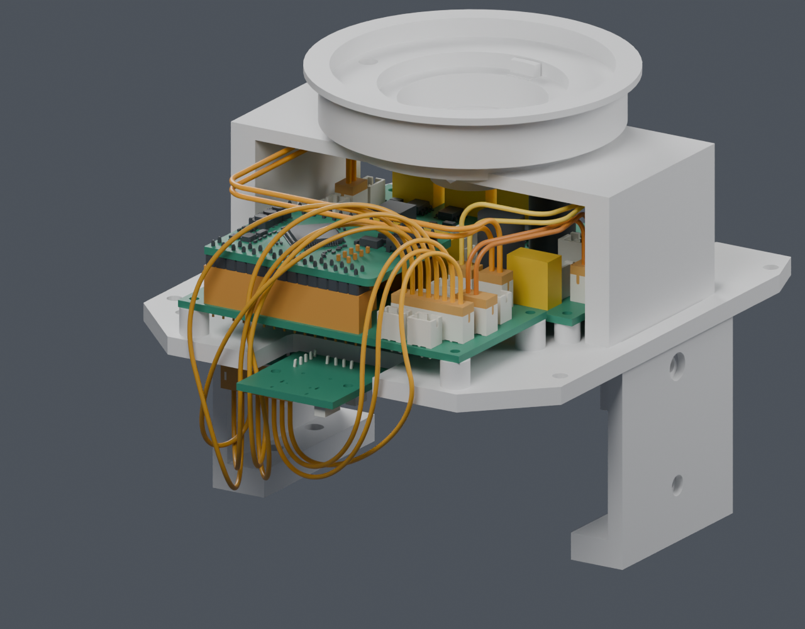
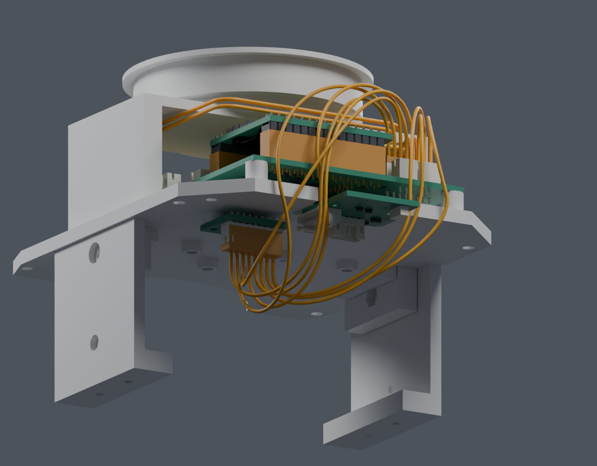

最新固定线装配候选
H01–H04 共14根线已通过静态、130头部姿态和407身体装配位置检查。其余分支、绑束、真实出线及松量仍未完成；主模型保持。
返回到货前工作历史记录 · IMU 八线已并入身体走线候选
M1.47 几何 · H01–H04，共十四根线 · 独立研究，未应用到主模型
保持原针序和结构。IMU 的 1–5 号线经后左侧，6–8 号线经后右侧；十四根线的实体、91 对线间距和 130 个头部姿态检查通过，没有增加打印件或走线孔。
这是一组静态走向候选。线材采购/压接、真实端子出线、固定绑束、拆装松量与其余线束仍未定，不能按下方几何长度裁线。
随后重放身体装配路径发现阻挡：上壳倾斜装入及后接口板随壳移动时，会碰到部分 IMU 线。407 个位置的带线检查为 FAIL；两处桥螺钉工具通道通过。当前静态候选不能直接作为装配路线，需继续调整走向。

后上方观察。橙色表示未采用的线材及插头包络；外壳、电池等在预览中隐藏，碰撞检查仍使用完整静态实体。

后下方观察，显示托板背面的 IMU 与其插头；未为线路开孔，也未移动原生接线针号。
输入与检查
保留端后 5 mm 直段分配。原 A2 中 5853/5854 的 10D 要求保持不变；这里研究的是另外两种具名线材，尚未选定。IMU 曲线按曲率极值检查，最小曲率半径约 5.23 mm。
十四根封闭扫掠均为单个连通实体，未检出刚体或线间交叠。扣除几何增厚和数值余量后，线间最小间隙下界 0.333 mm，刚体间隙下界 0.468 mm；超过本研究分配的 0.3 mm。130 个离散姿态覆盖 Yaw ±60°、Pitch −20°～25°，未检出头部碰撞；不等于连续运动或实物资格验证。
仍需完成
- 端子实际出线、线材采购与压接、绑束固定、应力释放及带线拆装。
- H05 与 J10 侧出候选的完整路径；其他分支、头部服务环和 FFC。
- 板卡候选正式整合、厂家接口资料，以及实际配合、温升与动态验证。
18 个 PH 接口修孔候选的独立接收核对已完成；其正式 PCB 尚未替换。
A5 新增厂家资料
已核对候选6711/6712的全外径公差及AWG均在SPH-002T-P0.5S目录范围内，实际mPPE压接、小量供货与加工报价仍未确认。J10插合后的导线中心高度仍未知。
保存场景内LCD、CAM和相机均属pitch组：FFC两端和全部固定点若随同一刚体运动，应先按静态弯曲与拆装设计。跨关节的供电、串口和舵机线另需运动检查。原配FFC的18P/0.5mm/200mm同向规格已收到，宽度、厚度和静态弯曲半径仍缺；SCS0009资料的编号/视图差异仍待厂家澄清。
A5机械接收记录 · 硬件原始证据与询问稿
几何中心线长度，仅用于比较
未计入端子、剥线、固定和拆装余量，不是裁线尺寸。
| 导线 | 端口 | mm |
|---|
| H01_1 | power_J17 → motion_J1 | 136.35 |
| H01_2 | power_J17 → motion_J1 | 144.35 |
| H02_1 | motion_J2 → power_J13 | 62.76 |
| H02_2 | motion_J2 → power_J13 | 64.28 |
| H03_1 | motion_J3 → power_J14 | 50.77 |
| H03_2 | motion_J3 → power_J14 | 54.50 |
| H04_1 | motion_J4 → imu_J1 | 123.52 |
| H04_2 | motion_J4 → imu_J1 | 146.19 |
| H04_3 | motion_J4 → imu_J1 | 121.19 |
| H04_4 | motion_J4 → imu_J1 | 137.89 |
| H04_5 | motion_J4 → imu_J1 | 127.73 |
| H04_6 | motion_J4 → imu_J1 | 117.92 |
| H04_7 | motion_J4 → imu_J1 | 117.40 |
| H04_8 | motion_J4 → imu_J1 | 117.28 |
十四线独立 Blender · 联合检查 · 八线针序与曲线 · 方法及范围
407位置的身体带线装配检查与静态通过记录分别保存，未删除失败项。
筛选算法修正：最近三角面的法向符号不能可靠判断点是否在实体内。原先“711条全部被拒绝”的结论撤回；改用完整曲线的表面间隙及封闭实体包含探针后，有142条通过单线装配筛查。四个实际场景回归检查通过，新筛查结果保留。单线通过仍不等于八线可同时装配。
八个端点插头本体独立通过407个装配位置和两处桥螺钉/工具路径。旧十四线实体装配相交是真实几何结果，仍保留FAIL；筛选误判不能抵消它。
原六线 Blender及原六线记录保留。主模型/视频仍为 M1.47 / M1.47-A1，打印件保持。